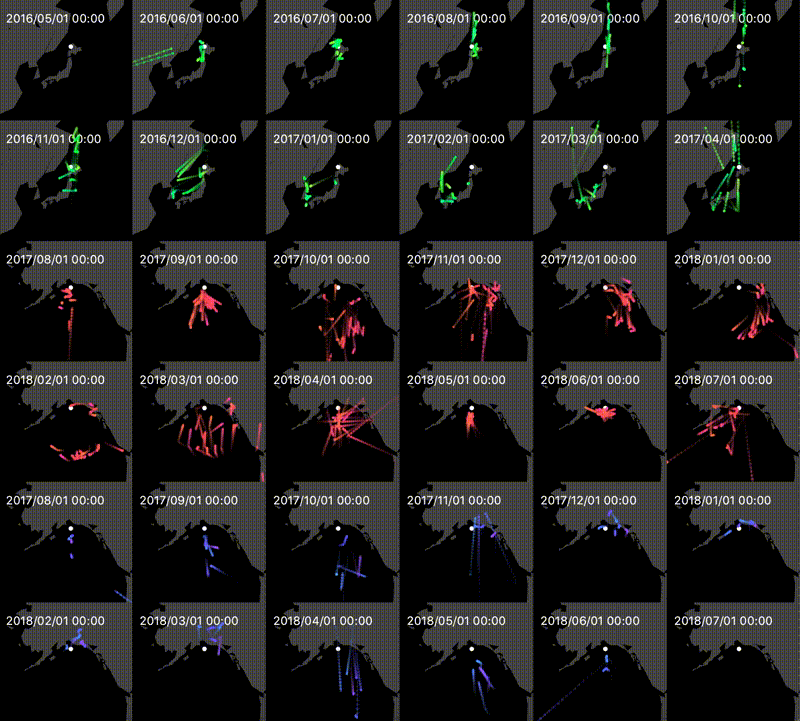

Umidori
2021.02 / Visualization


卒業研究で開発した可視化ツール。海鳥の行動データを可視化することで比較分析の支援を目的とする。
課題
海鳥は種や生息地や時期によって移動の様子が異なるため、その移動データを分析するためには比較が重要になってくる。
また海鳥をはじめとする移動体の移動データは可視化することでその理解が進む。
さらにデータの可視化作業は鳥類の研究者にとっては煩わしい作業である。
こういった背景から分析ツールは必須であることがわかるが、海鳥の移動データの比較分析のための効率的な可視化ツールはない。
アプローチ
自由度の高いSmall Multiplesを用いた視覚表現と、対話的な編集が可能なUIを備えた統合的ツールを開発した。
卒業論文PDF
(*筑波大学学内ネットワークからのみアクセス可能)
Development
Java, JavaFX